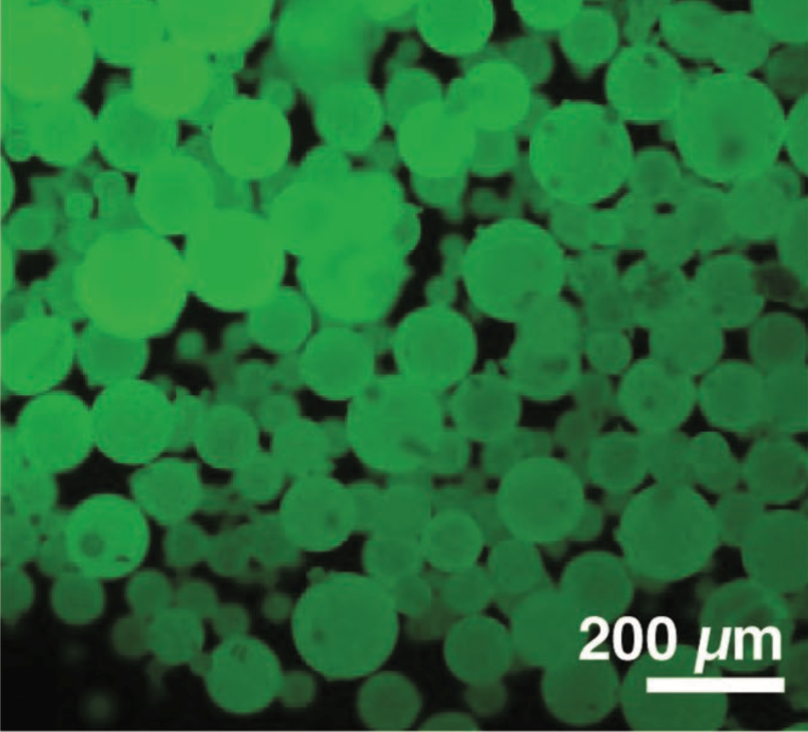
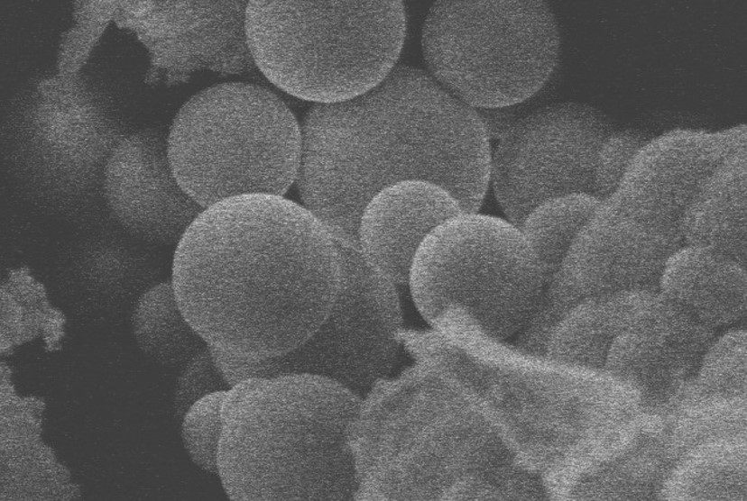

What is SMRT Coat?
SMRTCoat is a purely chemical and materials-based solution to this problem. By using nanotechnology-enabled smart materials, the constraints inherent to an electronic solution are avoided. By integrating microcapsules into a polymer matrix that can be sprayed on, the solution can be applied by anyone and the simple colour-changing properties can be clearly read by anyone. The simplicity of the system combined with seamless integration into existing technology allows SMRTCoat to thrive here.
 Optical image of synthesized PUF microcapsulesPrototyping
The mechanochromic sensor prototype is to be constructed through the careful mixing of its two main components, the dye-carrying microcapsules and the polymer hosting matrix, in a calculated ratio based on its working principle and performance data. When subject to impact the microcapsules rupture and release the dye; then the trace amount of organic solvent which is previously used to dissolve the dye evaporates, causing the dye molecules to lose their translational mobility and aggregate. This modulates the fluorescence spectrum and result in distinguishable optical change.
 Image of impacted microcapsules